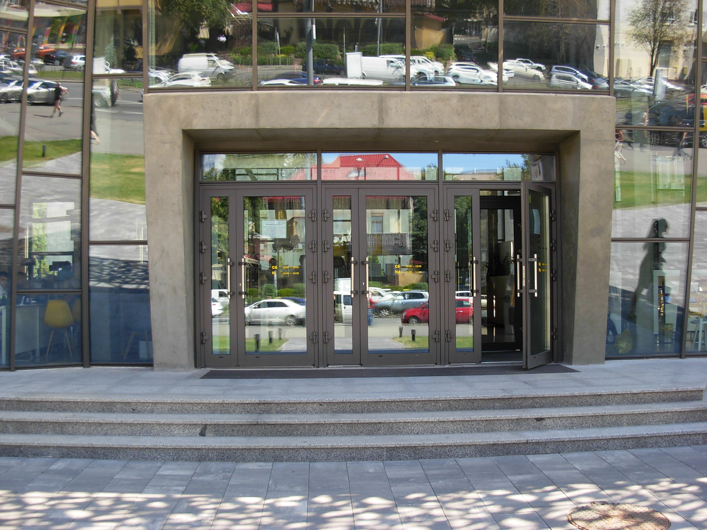

Как я получил свой первый биометрический паспорт
13/08/2017

Это было накануне 11 июня 2017 года, того дня когда должен был официально стартовать безвиз с странами ЕС и Шенгенской зоны. Напомню, что история с безвизовым режимом длилась несколько лет, но это совершенно другая история. Итак, 6 апреля 2017 года Европарламент проголосовал за отмену визового режима для Украины, а 11 мая 2017 года Совет Европы принял окончательное решение о предоставлении украинцам право посещать ЕС и Шенгенскую зону без виз. 22 мая в официальном журнале Европейского Союза обнародовано решение об отмене визовых требований для украинских граждан. И как результат, 11 июня 2017 года настал этот день! Украинским гражданам больше не нужно оформлять визы для пересечения границ Евросоюза и 90-дневного пребывания в Европе. Ура!
Я приехал в сервисный центр “Готово!” который находится рядом сo станцией “Печерская” утром около 8.30. Думал, буду в первых рядах, но впереди было уже порядка 70-ти человек. Попал к самому открытию (начало работы в будние дни с 8.30, в выходные с 10.00) Люди стояли у самого входа и уже была сформирована предварительная живая очередь. Я был 70-тый. Потихоньку народ стал заходить в парадные двери и там, в холле у стойки регистрации, шла предварительная проверка документов и выдавался талончик электронной очереди с порядковым номером. Все было спокойно и благородно, без давок и толкотни, каждый подходил к стойке регистрации предъявлял свой украинский паспорт, справку из налоговой ИНН и если есть, имеющийся загранпаспорт и получал свой порядковый номер. Это первое.
После получения номера в электронной очереди (талончик в виде чека), я прошел в основной зал для ожидания. Мой номер был 65-тый. Для комфортного пребывания здесь установлено много удобных и красивых кресел. Да, ждать пришлось долго, поскольку начался самый сезон на охоту за паспортами. Безвиз же ж! :)
На мониторах, которые расположены в разных местах, в том числе вверху по центру над головой, можно было проследить ход движения очереди и ждать пока загорится твой заветный номерок. В принципе, организаторы данного учреждения достаточно хорошо все продумали для комфортного пребывания. Есть буфет, где можно попить чай или кофе, что-то перекусить. Но мне не пришлось воспользоваться, поэтому, особо ничего не скажу о том как здесь кормят. :) Поскольку сейчас необходимо оформлять паспорта и для детей и даже младенцев, много родителей я видел с колясками и детьми разного возраста. Для них предусмотрен отдельный детский уголок. Это специально огороженный заборчиком участок с игрушками, где дети могут отвлечься от длительного монотонного ожидания. И это реально работает. С детьми всегда шумно и весело.
Табло.
Свою очередь мне пришлось ждать до 16.00 часов. Таким образом с момента прихода, прошло около 7,5 часов. Целый рабочий день. Оформление прошло достаточно быстро. После заполнения анкеты, мне выдали реквизиты для оплаты услуги. Тут же стояли два терминала для оплаты. Девушка с приветливой улыбкой помогла мне произвести оплату и выдала квитанции об оплате. Есть два срока оформления биометрического паспорта - 7 дней и 20 дней. Поскольку я никуда не спешил и моя первая поездка в ЕС была запланирована на середину августа, я выбрал 20-ти дневный срок изготовления паспорта. Общая его стоимость составила 990 грн. В процедуру биометрического паспорта входит сканирование отпечатков пальцев. На небольшой незамысловатый прибор со стеклышком нужно было прислонить указательный палец, что заняло несколько секунд и все, мои отпечатки в базе. После этого осталось сделать фото для паспорта. Для этого есть несколько комнат с зеркалами.
Фотографирование тоже проходит достаточно быстро. Можно сразу посмотреть результат своего фото и при необходимости его повторить. Сложнее было сделать свою электронную подпись. Для этого специальным карандашом нужно расписаться на стекле и это не совсем, как вы понимаете, привычное дело. Поэтому мне пришлось расписываться несколько раз, пока не получилось что-то вразумительное. Но всегда можно потренироваться, никто никого не гонит в шею. Вот собственно и все. Мне выдали конверт с документами (договор, согласие на сбор персональных данных, акт предоставленных услуг и оригиналы моих квитанций об оплате) Через 20 дней мне на телефон должно было прийти СМС с приглашением прийти для получения паспорта. К сожалению, СМС я не получил и где-то через 25 дней написал в чате на сайте сервисного центра “Готово!” о состоянии готовности моего паспорта. Мне ответили, что возможно из-за технического сбоя СМС не пришло и нужно подъехать в офис. Когда я приехал мой паспорт был уже готовенький. После второго сканирования отпечатков пальцев я стал обладателем своего первого новенького биометрического паспорта.
Хочется напомнить, что с этим документом, открывается свободный въезд в 30 стран Европейского союза, таких как: Австрия, Бельгия, Болгария, Греция, Дания, Эстония, Исландия, Испания, Италия, Республика Кипр, Латвия, Литва, Лихтенштейн, Люксембург, Мальта, Нидерланды, Германия, Норвегия, Польша, Португалия, Румыния, Словакия, Словения, Венгрия, Финляндия, Франция, Хорватия, Чехия, Швейцария, Швеция. Огромное спасибо всем, кто содействовал прогрессу нашей страны Украины, в вопросе открытия границ и спасибо работникам сервисного центра, за высококлассное обслуживание. Всем хороших путешествий и позитива!